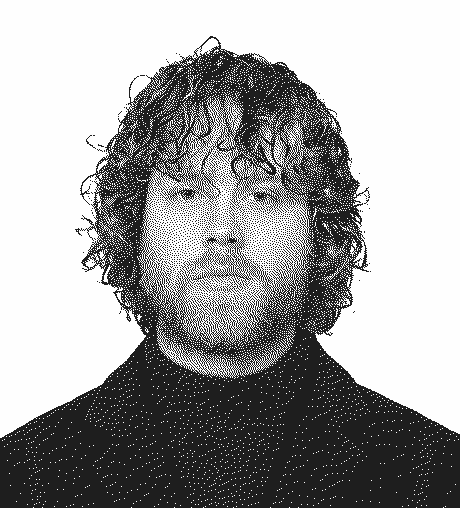

Mathieu Comtesse

M2 MQSE · Sorbonne Paris NordAlternance · SNCF Gares & Connexions
Prévenir, vérifier, maintenir.
Du terrain à la conformité.
Explorer le CVChoisis une thématique
01
Profil
Le lien entre les exigences MQSE et les outils numériques.
Découvrir 02Compétences
Savoirs, savoir-faire et réalisations associées.
Découvrir 03Projets
Applications métier et démonstrations détaillées.
Découvrir 04Power Automate
Des flux au service du suivi et des équipes.
Découvrir 05Qualité & Lean
Prévention, analyse des causes et amélioration continue.
Découvrir 06Parcours
Formation et expériences sur le terrain.
Découvrir 07Sandboard
Dessiner, creuser et lisser une surface de sable numérique.
Découvrir 08Contact
Échanger sur un recrutement ou un projet.
Découvrir